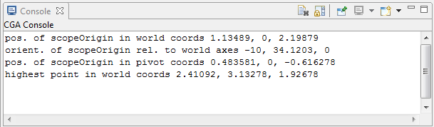

convert function
Syntax
float convert(coordinate, fromSystem, toSystem, type, x, y, z)
Parameters
- coordinate (selector)
x, y, z Coordinate component. - fromSystem (selector)
scope, pivot, object, world Coordinate system from which to convert. - toSystem (selector)
scope, pivot, object, world Coordinate system to which to convert. - type (selector)
pos, orient Choose interpretation of the (x, y, z) tuple as coordinates or angles. - x, y, z (float)
Position (coordinates) / orientation (angles in degrees) in the fromSystem to convert to the toSystem.
Returns
The selected coordinate component of the tuple (x, y, z), converted from the fromSystem coordinate system to the toSystem coordinate system. The tuple can either describe angles or a position.
Description
The convert function converts positions and orientations between different coordinate systems.
Related
Examples
Using convert to find the position and orientation of the scope origin in world and pivot coordinates as well as the highest point of the scope in world coordinates.
 |
version "2009.2"
Init-->
extrude(3)
t('0.2, 0, '0.7)
s('0.5, '1, '0.5)
r(-10, 70, 0)
print("pos. of scopeOrigin in world coords " +
convert(x, scope, world, pos, 0, 0, 0) + ", " +
convert(y, scope, world, pos, 0, 0, 0) + ", " +
convert(z, scope, world, pos, 0, 0, 0) )
print("orient. of scopeOrigin rel. to world axes " +
convert(x, scope, world, orient, 0, 0, 0) + ", " +
convert(y, scope, world, orient, 0, 0, 0) + ", " +
convert(z, scope, world, orient, 0, 0, 0) )
print("pos. of scopeOrigin in pivot coords " +
convert(x, scope, pivot, pos, 0, 0, 0) + ", " +
convert(y, scope, pivot, pos, 0, 0, 0) + ", " +
convert(z, scope, pivot, pos, 0, 0, 0) )
print("highest point in world coords " +
convert(x, scope, world, pos, scope.sx, scope.sy, scope.sz)
+ ", " +
convert(y, scope, world, pos, scope.sx, scope.sy, scope.sz)
+ ", " +
convert(z, scope, world, pos, scope.sx, scope.sy, scope.sz) )
|
| The output of the cga code above in the scene on the left is:  |
Copyright ©2008-2020 Esri R&D Center Zurich. All rights reserved.